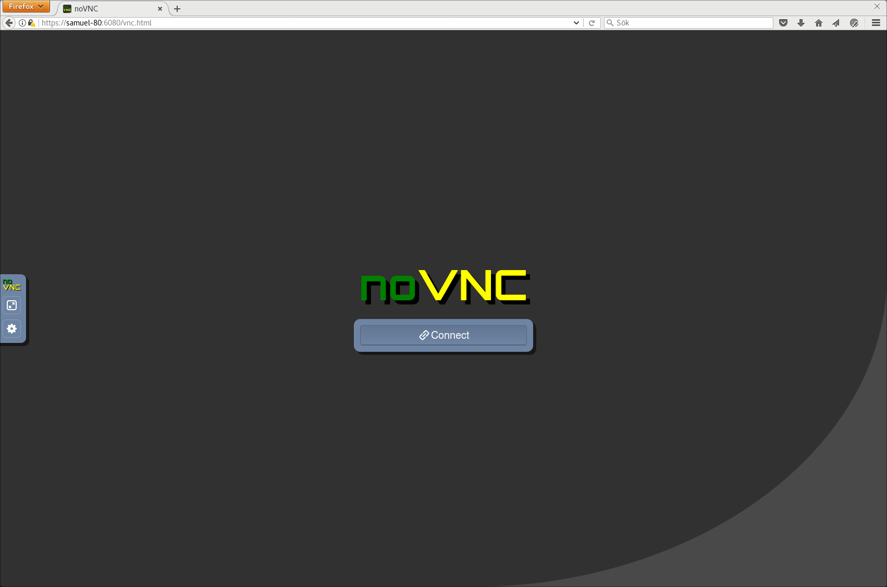
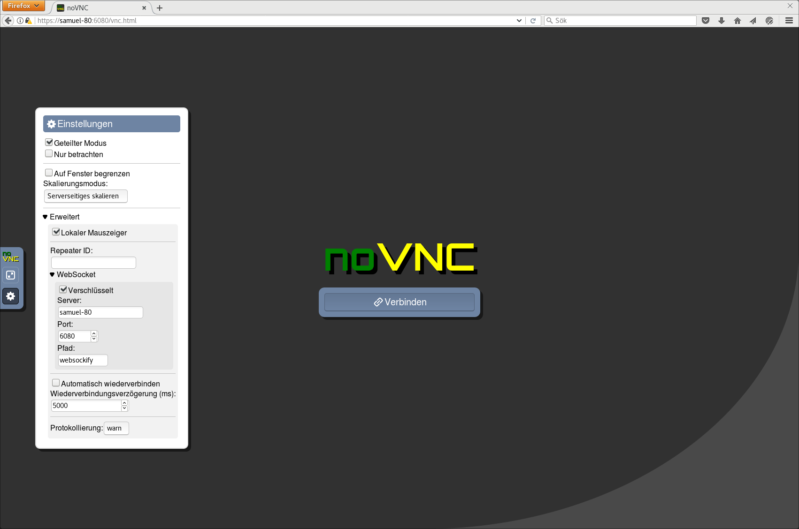
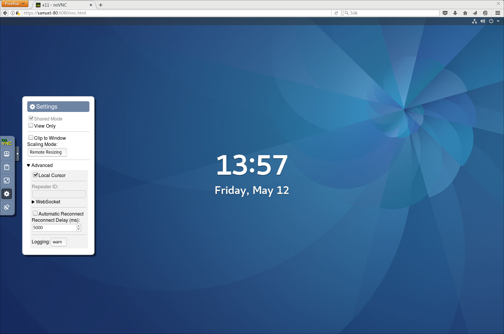
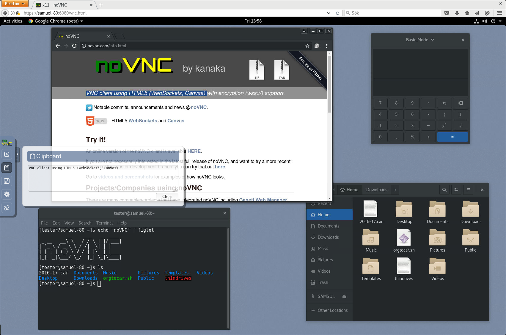
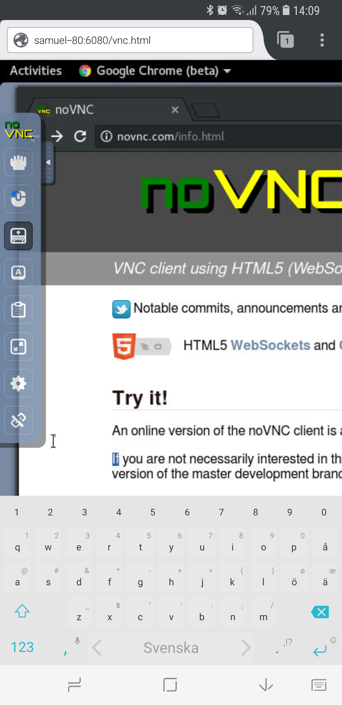
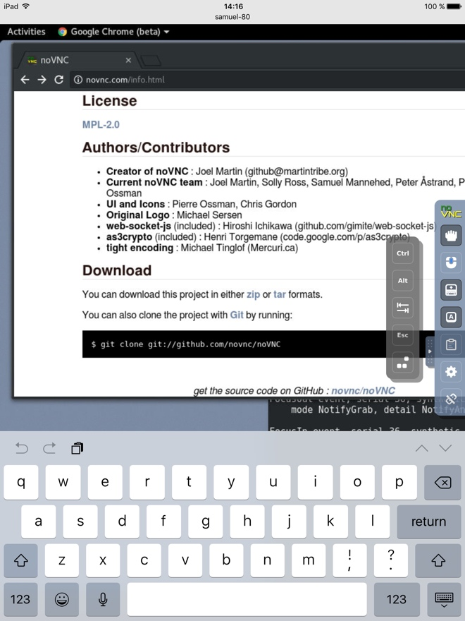

See homepage and
README for more info.
A very quick 1 minute demo showing noVNC in Firefox on Windows 10 used to
connect to a GNOME desktop.

The login screen of noVNC. You will be prompted for a password if your server
requires one.

The interface is translated. German translation shown here.

Connected to an TigerVNC server running on a Fedora 25 workstation
with an GNOME 3 desktop, Google Chrome, gnome-calculator, gnome-terminal and
nautilus. Yes, that's Chrome running "inside" of Firefox. Clicking the small
handle to the left will open the control bar.

There are many settings in the interface, including local cursor, scaling,
clipping mode for viewport panning and automatic reconnection.

A solution for clipboard transfer is available. Text copied in the remote
desktop will appear in the clipboard box in noVNC's interface. You can then
copy the text from that box to access it in your local clipboard. Any text put
into the clipboard box will be sent to the remote clipboard as well.

Some keyboard keys and combinations are intercepted by the browser. We have
added the most common keys to the interface to allow such keys to be sent to
the remote desktop. Note that the control bar can be dragged to whichever side
you prefer, simply drag the handle.

Connected to the same remote system using Firefox on a Samsung Galaxy S8
running Android 7. Notice the mouse and keyboard buttons in the control bar for
selecting the active mouse button and for toggling the on-screen keyboard. You
can run noVNC in fullscreen mode if you want (third button from the bottom).

Connected to the same remote system using Safari on an iPad mini 3 running iOS
10.